Apa Itu SSH ?
SSH adalah protokol untuk bertukar data secara aman antara dua komputer melalui jaringan. Setiap kali data dikirim oleh komputer ke jaringan, SSH secara otomatis mengenkripsi (mengacak) itu. Kemudian, ketika data mencapai penerima yang dituju, SSH secara otomatis mendekripsi (menguraikan) itu. Hasilnya adalah enkripsi transparan: pengguna dapat bekerja secara normal, tidak menyadari bahwa komunikasi mereka di-enkripsi dengan aman di jaringan.
Kesimpulannya adalah, bahwa klien SSH berkomunikasi dengan server SSH melalui koneksi jaringan terenkripsi.
Konfigurasai SSH Server di Debian 10
1. Buka OS Debian di VirtualBox, kemudian login dengan menggunakan user Root
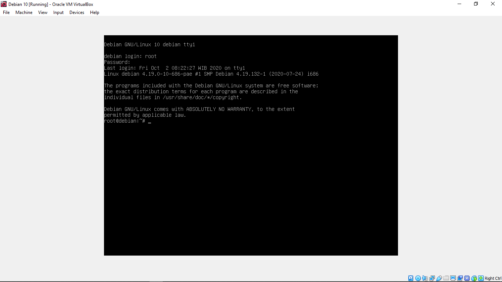2. Kemudian Konfigurasi terlebih dahulu untuk IP Servernya dengan mengetikkan perintah nano /etc/network/interfaces
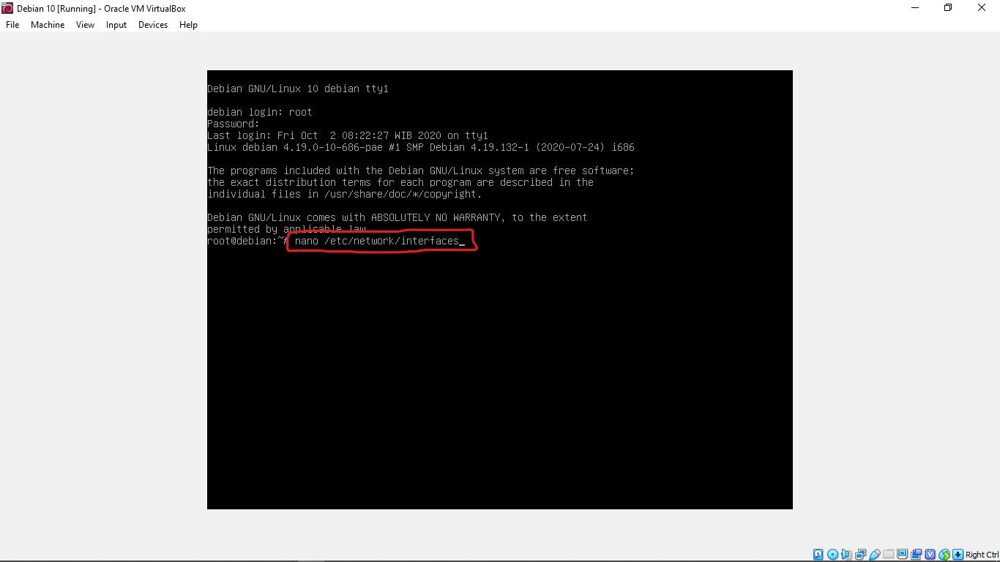3. Jika sudah masuk ke konfigurasi IP nya, kemudian tuliskan konfigurasi berikut:
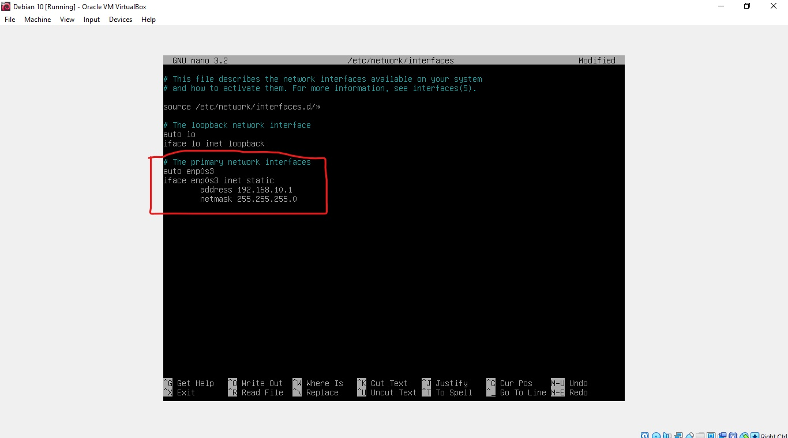
4. Kemudian jangan lupa untuk me-restart konfigurasi SSH dengan mengetikkan perintah /etc/init.d/networking restart.
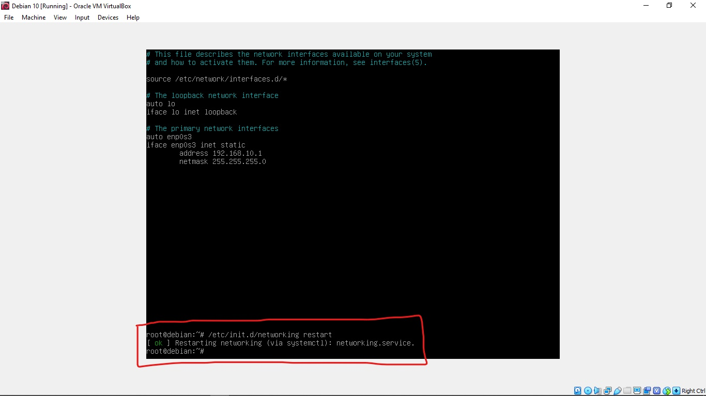5. Kemudian cek IP apakah sudah berhasil atau belum, dengan mengetikkan perintah ip a.
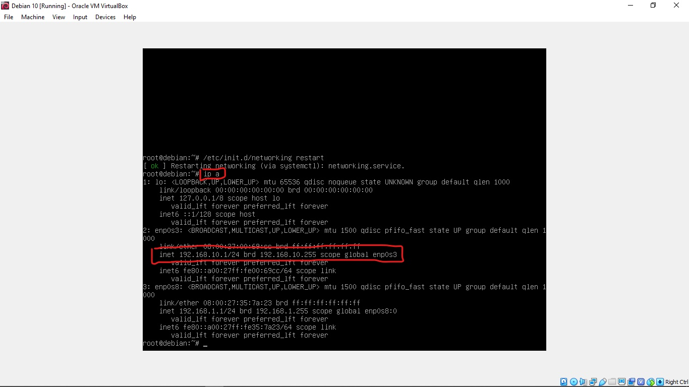6. Sebelum install package openssh-server pastikan terlebih dahulu repository sudah mengarah ke DVD binary 1. Masukkan DVD binary 1 terlebih dahulu kemudian ketikkan perintah apt-cdrom add.
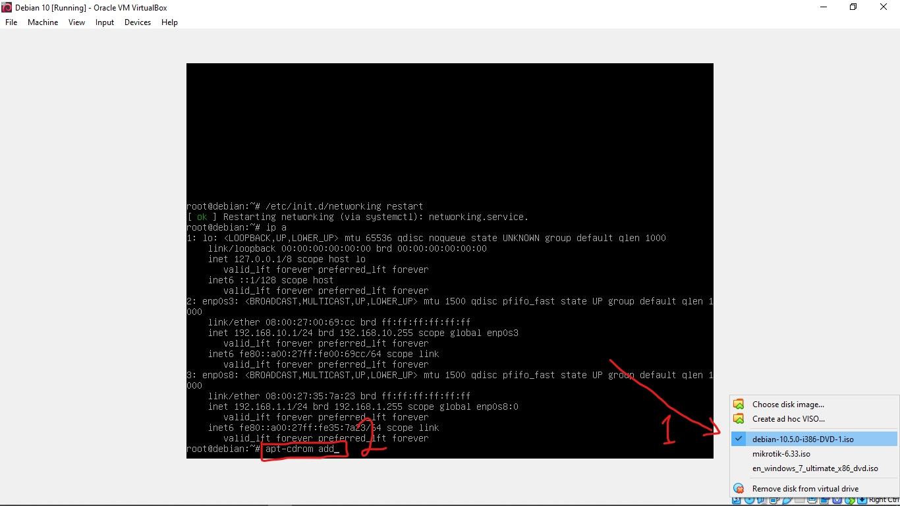7. Kemudian kita install package openssh-server dengan mengetikkan perintah apt-get install openssh-server. jika ada pertanyaan y/n klik tombol y kemudian enter.
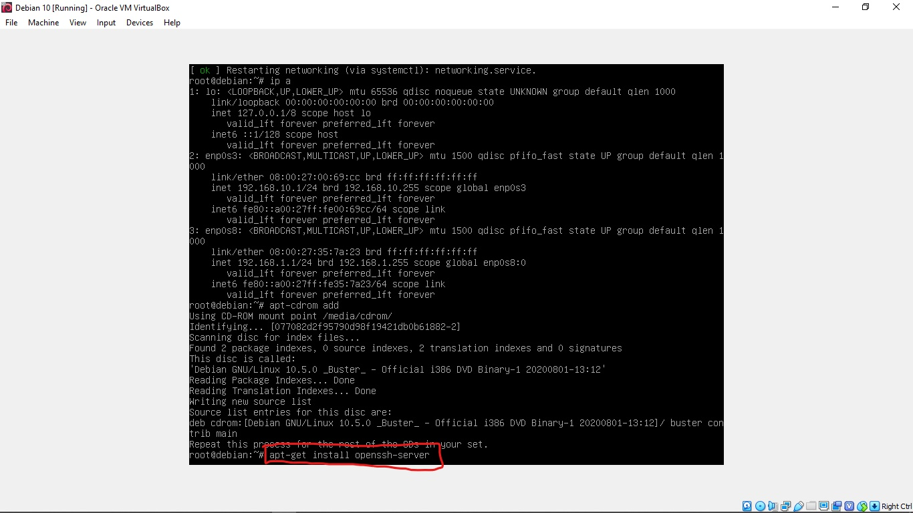8. Untuk memastikan apakah ssh sudah terinstal dengan baik atau belum kita ketikkan kembali perintah apt-get install openssh-server. jika ada tulisan 0 upgrade, 0 newly installed, 0 to remove and 0 not upgraded. berarti sudah terinstall dengan baik.
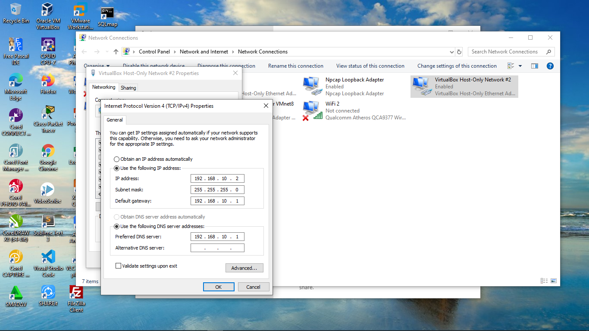9. Jika sudah, kemudian beralih ke komputer client. Konfigurasi IP addressnya terlebih dahulu.
10. Selanjutnya buka aplikasi putty, kemudian masukkan ip address server pada bagian hostname.

11. Jika ada pertanyaan seperti ini, klik saja yes.
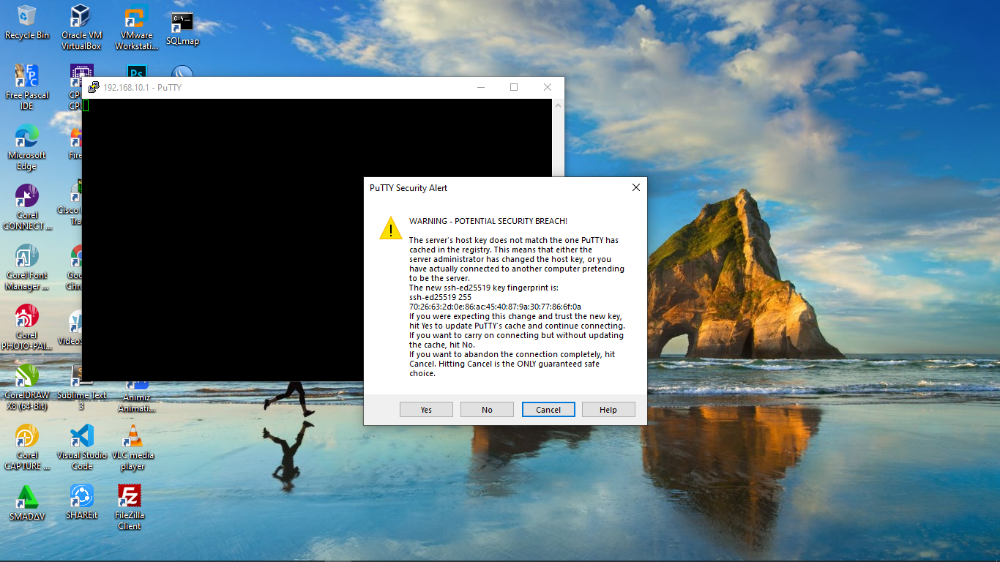12. Login dengan menggunakan user biasa, jika tampilannya seperti ini, itu artinya proses instalasi ssh server di debian 10 telah berhasil.
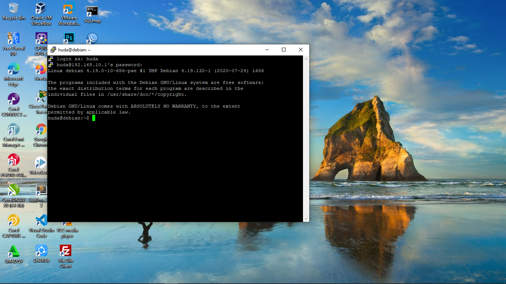13. Kemudian kita coba login Root di PuTTY. Close jendela PuTTY kemudian masuk kembali dengan menggunakan user Root.
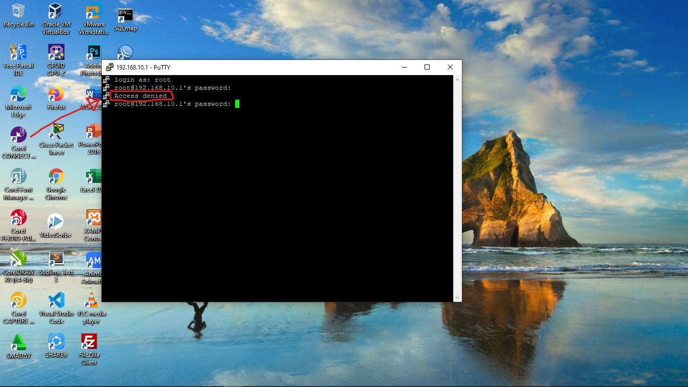14. Untuk mengatasi hal tersebut kita kembali ke server debian kemudian konfigurasi ssh dengan mengetikkan perintah nano /etc/ssh/sshd_config . Setelah masuk ke konfigurasi kemudian cari kata PermitRootLogin . Setelah menemukan kata tersebut hapus tanda pagar yang ada di depan kata tersebut dan ubah katanya menjadi PermitRootLogin yes PermitRootLogin yes berarti kita mengizinkan login dengan menggunakan user root, jika PermitRootLogin no berarti kita tidak bisa login dengan user root.
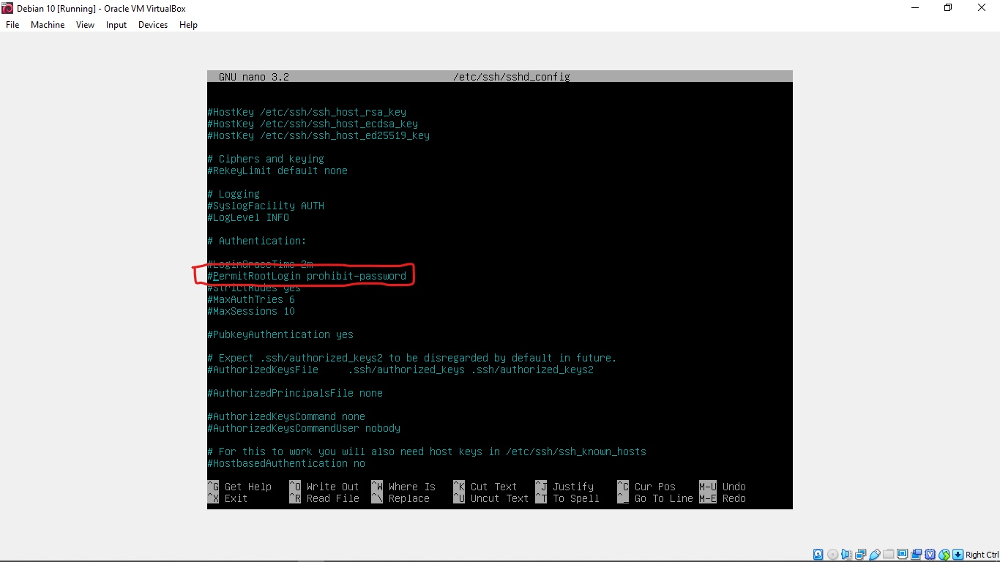15. Kemudian simpan konfigurasi dengan menekan tombol Ctrl + O dan keluar konfigurasi dengan menekan tombol Ctrl + X . Setelah itu jangan lupa untuk me-restart setiap selesai konfigurasi dengan mengetikkan perintah /etc/init.d/ssh restart.
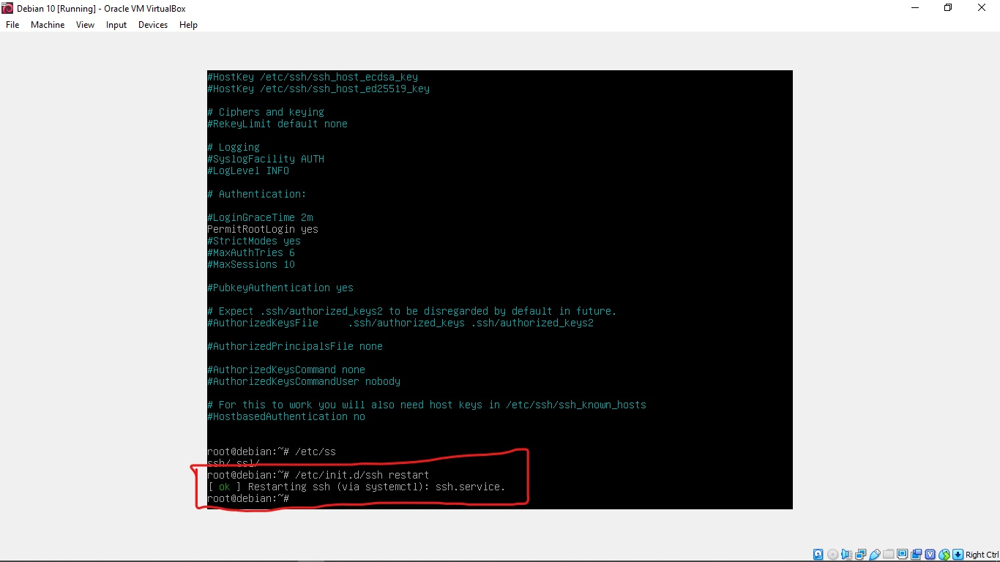16. Kemudian buka PuTTY dan Login dengan menggunakan user root.
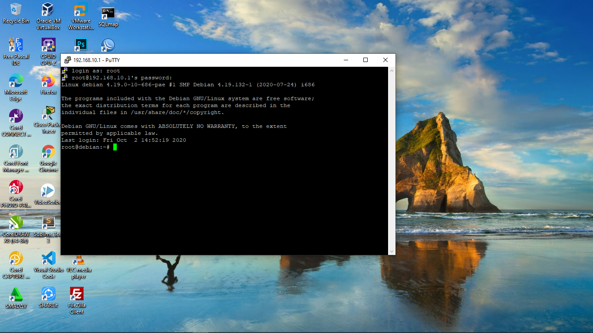Sekian tutorial dari saya semoga bermanfaat, dan terimakasih telah berkunjung di blog saya dan jangan lupa kunjungi terus blog saya untuk mendapatkan informasi-informasi yang lebih bagus lagi dan lebih bermanfaat.......